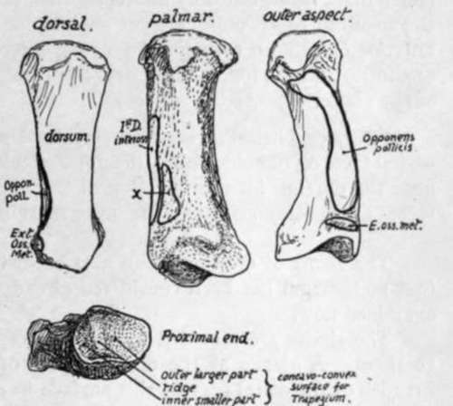

Separate Bones Of Metacarpus
Description
This section is from the book "The Anatomy Of The Human Skeleton", by J. Ernest Frazer. Also available from Amazon: The anatomy of the human skeleton.
Separate Bones Of Metacarpus
With the exception of the first, the metacarpals articulate with each other at their bases, so bear facets on their sides here, and also impressions for interosseous ligaments : they are, moreover, attached to each other at their distal ends by the transverse metacarpal ligament, which lies on the palmar aspect of the heads of the inner four bones and is attached to them through the capsule of the metacarpophalangeal joint. They are arranged in a somewhat radiating fashion, and make a palmar concavity, and the intervals between them are hlled up by the interosseous muscles : the concavity contains the flexor sheath and, deep to this in the outer part of the palm, the adductors of the thumb, while the deep palmar vessels and nerve cross it near the bases of the bones. Their dorsal surfaces are covered by the plane of extensor tendons, and the dorsal interosseous fascia extends from bone to bone between them.
The different metacarpals can be easily recognised, but it is well first to observe the general distinctions in appearance between the metacarpals and metatarsals, as shown in Fig. 85. The proximal ends of the metacarpals are distinctive.
First, or Thumb, Metacarpal (Fig. 90).-Sometimes confounded with phalanges: distinguished by its simple rounded head and its basal concavo-convex surface for articulation with trapezium. Shaft is broad and rather flattened. A small facetted tubercle on the outer side of the proximal end is for insertion of Extensor ossis metacarpi, and may be used to aid in placing the bone on its proper side ; but the tubercle is often indistinct, and there may be a large ligamentous tubercle on the inner side. The saddle-shaped surface for trapezium is divided by a low ridge running anterc-posteriorly, and the larger subdivision is external, as shown in Fig. 90.
Second, Or Index, Metacarpal
Recognised at once by the deep cleft or groove running antero-posteriorly across its carpal surface, as shown' in Fig. 91, for articulation with the trapezoid : it is very apparent when looked jLt from the dorsal side. The bone touches the middle metacarpal, and therefore has a metacarpal facet on its inner side, and this is separated from the basal surface by a bevelled-off area for the os magnum. On the outer side there is no metacarpal facet, but a small rounded or four-sided surface looking forwards, outwards and upwards for the trapezium : immediately behind this is a roughened facetted dorsal area fcr the insertion of Extensor carpi radialis longior.
Third, Or Middle-Finger, Metacarpal
Recognised by its styloid process, which also is on the outer side of its basal end behind : from this the bone can be placed on its proper side. There is only one carpal facet, but metacarpal facets are on both sides. Observe that these are divided into anterior and posterior parts, partly on the outer side and altogether on the ulnar side, by rough areas for interosseous ligaments.
Fig. qo.-First right metacarpal. The side to which the bone belongs can be ascertained by looking at the proximal articular surface ; the outer slope of the saddle-shaped surface is larger, x, origin of deep head of F. brevis pollicis.
The styloid process may be short, separating the index metacarpal from the os magnum, or may be larger and longer, extending between these to reach the trapezoid. It may be a separate free ossicle, or this may have fused secondarily, not with the metacarpal, but with the os magnum or, more rarely, with the trapezoid.
Fourth, or Ring-Finger, Metacarpal.-This can be recognised because it manifestly has not the character of the bones already considered, yet has metacarpal facets on each side, and nof on one side only, as is the case in the fifth metacarpal-in fact it can be recognised mainly by its negative characters. The ulnar metacarpal facet is single, the radial double. The carpal facet, for unciform, is continuous with the single inner facet, but only indirectly with the posterior of the two outer ones, through the medium of an obliquely-cut surface for the os magnum. It is cut off from the anterior one by an area for the strong interosseous ligament connecting os magnum, unciform, and the fourth metacarpal, and this ligament may be enlarged at the expense of the anterior facet.
Fifth, or Little-Finger, Metacarpal.-Distinguished by its possession of a metacarpal facet on one side only : the non-articular inner side presents a prominent tubercle near the dorsum for the insertion of the ulnar extensor. The carpal and metacarpal facets are continuous round the outer margin cf the base.
The shafts of the bones can also be distinguished from each other. That of the first metacarpal has been considered already, and the markings on the others can be examined now.
The shafts are moulded by the interosseous muscles that are so closely apphed to them. A glance at the dorsal aspect of the metacarpus shows that the greater breadth of the distal part of this surface in each bone is due to the encroachment of the dorsal interossei on the proximal portion, and it is interesting to observe that the extension of these muscles dorsally is most marked when there is a corresponding palmar interosseous on that side of the bone : thus the proximal part of the dorsal surface or ridge is pushed towards the outer side on the index metacarpal and to the inner side in the fourth and fifth bones, an obhquity that is very marked in some specimens.
Examine the sides of the shafts. The interossei have short tendinous fibres mixed with their fibres of origin, and therefore there is a very slight roughness visible over their areas ; but the finger and eye will have no difficulty in finding the fine cleanly-cut line that marks the separation between dorsal and palmar interosseous, and in well-marked bones the areas can be almost completely mapped out in this way. Fig. 92 shows these origins : the upper row is a view of the radial aspect of the bones ; in the lower row they are seen from the inner side.
Continue to: